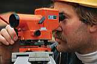

Всички злополуки с увреждания на очите са опасни, защото не е сигурно дали малките увреждания няма да се превърнат в сериозни такива или да доведат до загуба на зрението. Всяка година се отбелязват множество злополуки с очи на работното място, предизвикващи отсъствие от работа за повече от три дена.

ИЗБИРАНЕ НА ПРАВИЛНАТА ЗАЩИТА НА ОЧИТЕ
Опасностите свързани с работата ще определи нужната защита. Цялостно покриване на очите е нужно там, където има опасни изпарения. Където се налага предпазване на белите дробове може да се използват противогази. Когато не е необходимо цялостно предпазване, могат де се използват очила със или без странични предпазители.
Ако предпазителите върху очите трябва да се носят върху очила, то те трябва да са подходящи, да осигуряват подходящ луфт между тях и очилата. Очните протектори трябва да се носят индивидуално само от човека за когото са предназначени. При многократно използване те трябва да се измиват и дезинфектират.